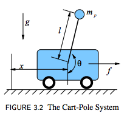
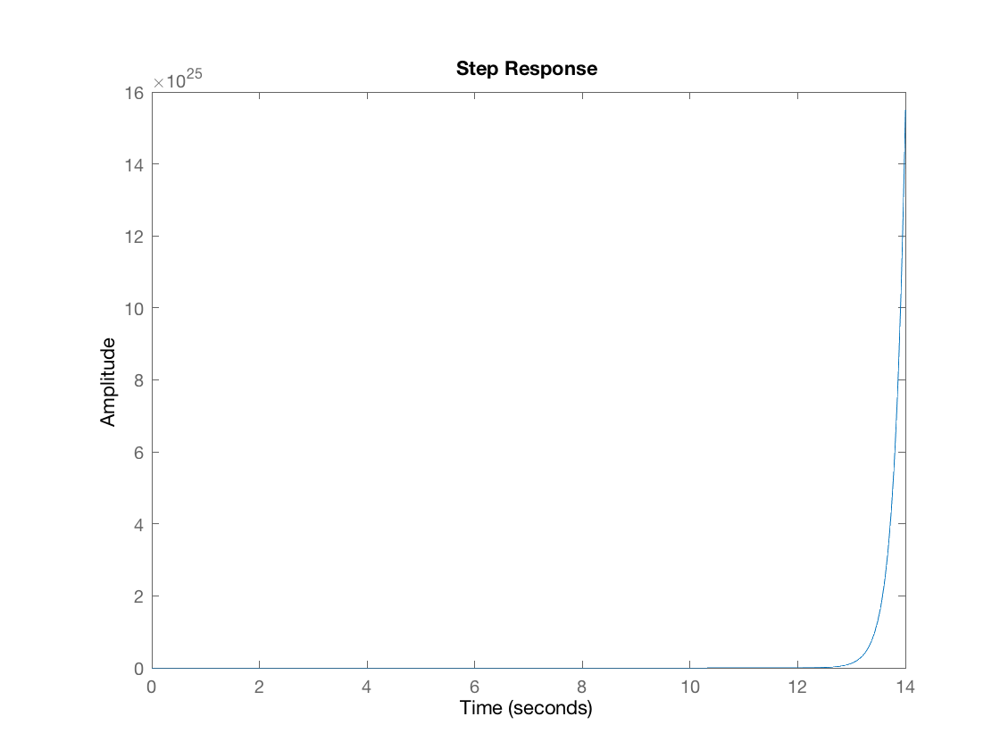
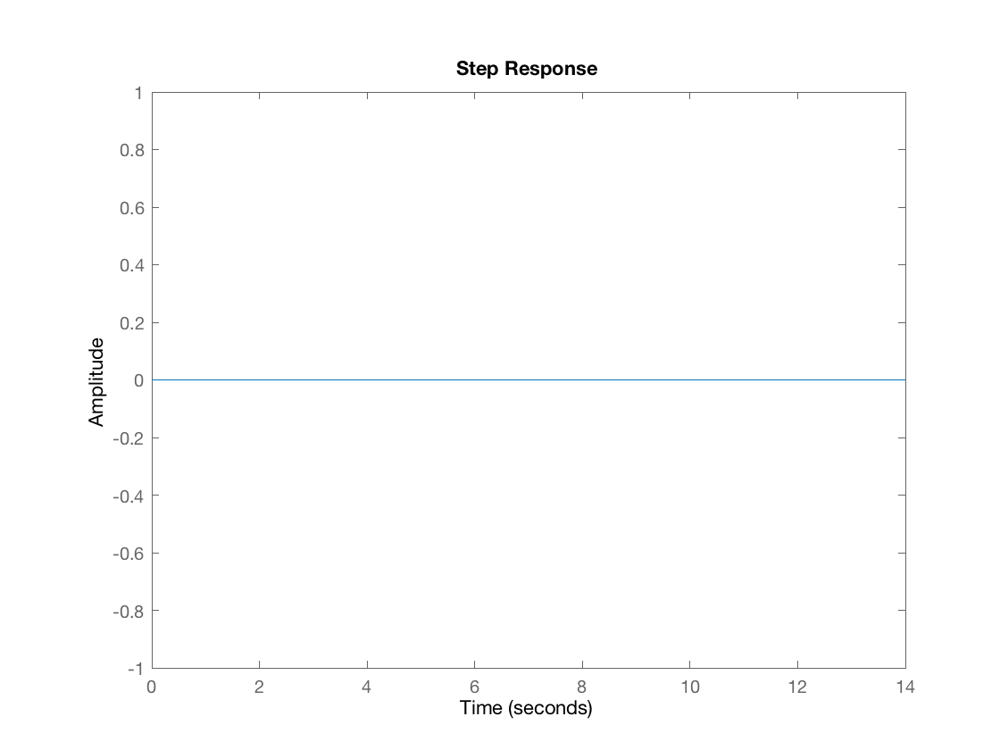
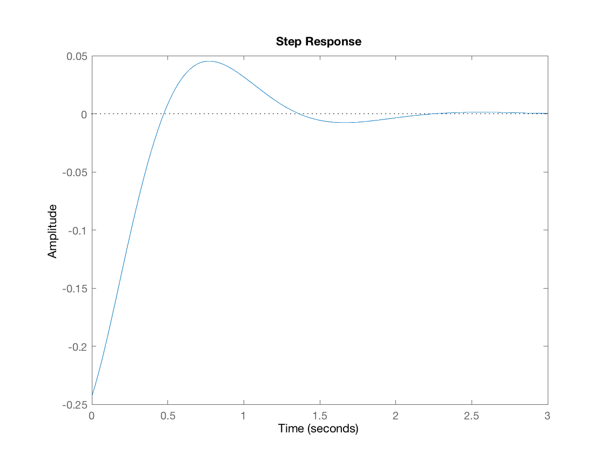
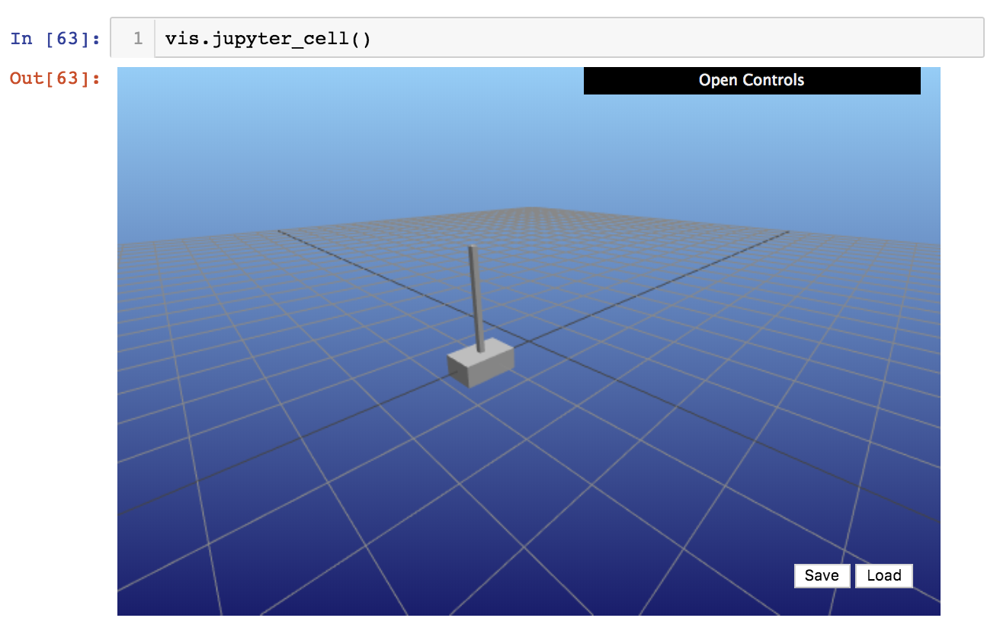
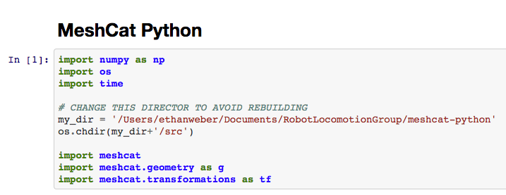
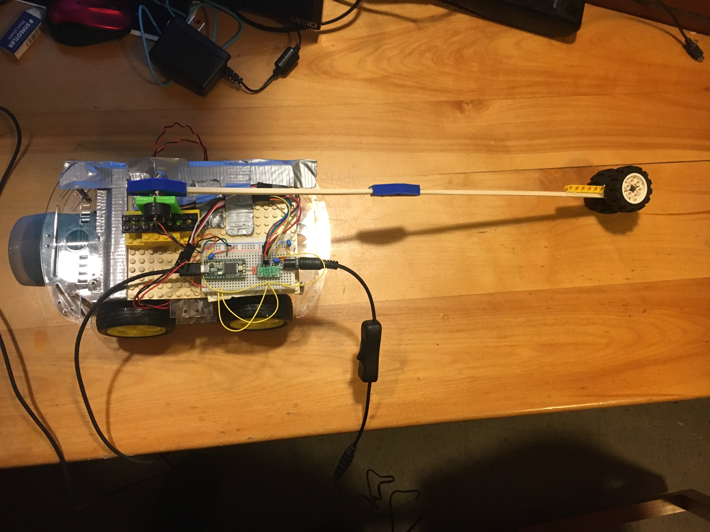

The cart pole is a very common system studied in the context of controls. The goal of the problem is to balance an inverted pendulum (mounted on the cartpole) in the upright, vertical location. This is a challenging problem because the upright fixed point is unstable. Furthmore, the only way to correct for the angle position of the inverted pendulum is through non-collocated control, meaning indirect control via the input force of the cart. This presents a fun problem in control theory.
Here is a diagram depicting the dynamics of the problem taken from Russ Tedrake's Underactuated Robotics course notes:

From this diagram, it is clear that the pendulum is unstable. Furthemore, there are 4 states of the system. The states include the following: $x, \dot x, \theta, \dot \theta$. We have the option to choose what we want to control, but for my case we are choosing to control $\theta$. In particular, we wish to control for the desired position where $\theta = \pi$ according to this diagram.
To control this system, we first need to analyze the dynamics of the system. Based on the diagram, the only input we can control is $f$, the force on the cart. Now we need to determine how this input affects our states. To do this, we need to solve for the accelation of the $x$ and $y$. Instead of working out all of this math, I'll take the results again from Russ Tedrake's textbook. Because the class did not focus on deriving dynamics, I'll jump to the following equations. Note however that we are not including friction to make the anlaysis easier. Lagrangian mechanics yields the following result:
$\ddot{x} = \frac{1}{m_c + m_p \sin^{2}{\theta}} [ f + m_p \sin{\theta} (l \dot{\theta}^{2} + g \cos{\theta}) ]$
$\ddot{\theta} = \frac{1}{l(m_c + m_p \sin^{2}{\theta})} [ -f \cos{\theta} - m_p l \dot{\theta}^{2} \cos{\theta} \sin{\theta} - (m_c+m_p) g \sin{\theta} ]$
With these equations, we now have a clear definition for how $f$, $\ddot{x}$, and $\ddot{\theta}$ are related. These dynamical equations provide sufficient information to begin our plant analysis. In our problem, since we only care about stablizing where $\theta = \pi$, we can linearize the system at this point. We can do this with a few approximations, and by defining theta in terms of a new quantity, phi. $\theta = \pi + \phi$ The approximations are the following:
$\cos \theta \approx -1$
$\sin \theta \approx -\phi$
$\dot{\theta}^{2} = \dot{\phi}^{2} \approx 0$
$\phi^{2} \approx 0$
With these approximations, we can now linearize by substituting these quantities. In our case, we only care about how the input $f$ relates to $\phi$, our angle. To simplify analsis, we will only linearize the second equation, the one that relates $\theta$ to the force $f$. Note that we can isolate this equation because we decided not to include friction in our analysis. Including friction would relate the equations to each other because then $f$ in the diagram would actually be $f - b \dot{x}$, where b is a positive coefficient of friction. Furthermore, we will not worry about controlling the cart's acceleration or position. Linearizing our equation of interest results in the following:
$\ddot{\phi} = \frac{1}{l(m_c + m_p \phi^{2})} [ -f (-1) - m_p l (0) (-1) (-\phi) - (m_c+m_p) g (-\phi) ]$
$\ddot{\phi} = \frac{1}{l m_c} [ f + (m_c+m_p) g \phi ]$
Now that we have linearized about the upright, we can begin analysis of our plant. We can find the transfer functions by using the laplace transform. Although discrete control is used in practice, the laplace transform provides adaquate analyse when considering a very small timestep. Control is effectively continuous if the timestep is very small. In my case, I'm running my simulation about 0.001 seconds per step and about 0.002 seconds per step with the Teensy microcontroller in hardware. Replacing $f$ with our input force, which we will call $u$, and taking the laplace transform yield the following:
$l m_c \ddot{\phi} = u + (m_c+m_p) g \phi$
$l m_c \ddot{\phi} - (m_c+m_p) g \phi = u$
$(l m_c) s^{2} \phi(s) - (m_c+m_p) g \phi(s) = u(s)$
$\frac{\phi(s)}{u(s)} = \frac{1}{(l m_c) s^{2} - (m_c+m_p) g} $
$H(s) = \frac{\phi(s)}{u(s)} $
This result $H(s)$ relates the input force to the angle. This is the open loop transfer function for our modeled plant. We can also close the loop in the following way by using Black's formula, or the "closed loop transfer function".
$G(s) = \frac{\phi(s)}{\phi_{desired}(s)} = \frac{H(s)}{1 + H(s)}$
For our analysis, let's set $l = .5 m$, $m_c = 5.0 kg$, $m_p = 1.0 kg$, and $g = 9.81 m / s^{2}$. Closing the loop with no control, we can graph the step response. Here is step response starting at $\phi = -.1$ subject to a step of amplitude .1 to target $\phi = 0$.

Clearly this is an unstable system. As soon as the pendulum is offset from $\phi = 0$, the amplitude of $\phi$ will "blow up", meaning it will become huge and far from our desired value of $\phi = 0$. However, we know that when $\phi$ starts at 0 and is subject to no step response we get the following:

Okay, now it's time to add some control to our unstable system. For our case, we will add PID control (proportional, integral, and derivative control) to stabilize the system around the fixed point. Let's contruct the plant and make sure things look good! The PID plant will take the following form.
Here is a graph of the step response with PID control with $k_p = 100.0$, $k_i = 0.0$, and $k_d 10.0$ (so technically PD control).

Notice that the system is now stable, but it has overshoot. This is a good sign because it means our PID controller has a chance! Now we can optimize by tweaking values to find the best step response. Also, note that the I gain didn't turn out to be very useful, which is why $k_i = 0.0$ in the control. The integral error would not efficiently correct itself without overshooting (going past the unstable fixed point at the vertical), so this led to poor control.
Before tackling the problem in hardware, I decided to similate my results first. Using a tool called Meshcat, a tool developed by my reseach supervisor, Robin Deits, I was able to modify a cart pole in simulation to use a PID controller. By using the dynamics derived above, I created the similator. I then used the error based on having my target angle to be vertical. Ignoring the I gains, I obtained good results.

Here is the notebook file used to create the simulation. If you'd like to try the code yourself, use the file found here. This file contains the correct code to run the simulation. The only thing to change is in the first cell; the directory should be changed to the location specific to your computer. Jupyter Notebooks at this time don't play well with relative directories.

Note that our transfer function above was related to force. In the hardware build, we are not directly affecting our the force of the cart. However, we are inputing a PWM signal, which is linear in how it affects the torque of the motors, which is also linear in how it affects the force on the cart. Therefore, we do not need to change our anlysis because it only differs by a constant scalar. Thankfully DC motors cooporate well when relating PWM input (voltage) to force.
With these assumptions, I began constructing the cart with a chassis comprised of 4 DC motors, a Teensy microcontroller, a Polulu motor driver used in class, and various other parts seen in this picture:

Here is pseudo code for the PID controller used on the hardware. It worked quite well and as expected based on the plant analysis!
All said and done, here it is! Unfortunately the cables were too short for a longer demonstration, but hey, it worked! :)
This was a very fun project! It was my midterm project for MIT's Feedback Systems (6.320) course. Huge shoutout to Professor Jacob White for making projects like these possible with proper system analysis! He clearly loves working with and helping each and every student. Also shoutout to my partner Sebastian Lopez-Cot for working with me on the project and creating his own simulation--with a CAD model!